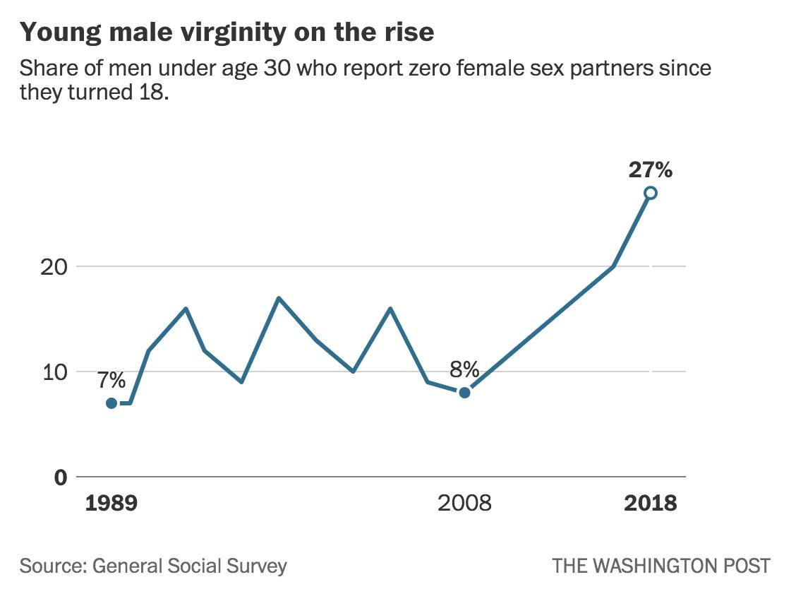
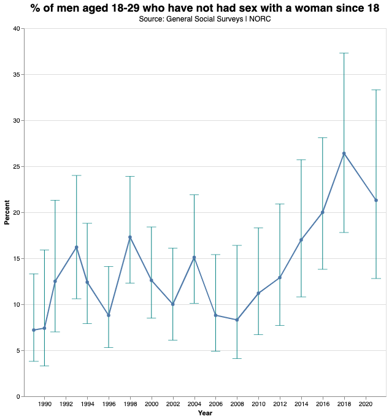

Washington Post's 'Young male virginity on the rise' Graph
Tags: data
This graph periodically shows up on Reddit and other news aggregators:

This graph is frequently accompanied by comments claiming that it has been falsified:
- “After my dive on the interwebs it seems that this graph does not show male virginity. Thats a lie to push some incel narrative.”
- “The original WaPo article … did not talk about anything about virginity.”
- “This appears totally fabricated.”
I was interested in figuring out if this was real or not.
Yes, WaPo published this graph
First, let’s note that a Washington Post journalist did publish this graph. It doesn’t appear in the actual article (nor in the oldest archived version), but it is in a promotional tweet from the article’s author Christopher Ingraham (archived) which contains the chart:
Stunning chart: the share of men under 30 who aren’t having sex has nearly tripled in the past decade
– @_cingraham (March 29, 2019)
I suspect that part of the confusion is that the WaPo article itself shows a similar graph (% of men who haven’t had sex in the last year), but not this graph which is more commonly cited.
Yes, the graph is based on GSS data
Let’s see if we can reproduce the actual graph using The General
Social Survey (GSS) data. With GSS’s search data tool,
we can find the variables we need. The dependent variable
we want to analyze is numwomen. Our independent variable will be
year. We’ll want to filter based on sex and age.
The easiest way to do perform a quick analysis on GSS seems to be to use UC Berkeley’s SDA program, which handles a lot of the gotchas of working with GSS for you. In particular, the following configuration will reproduce the graph:
- Analyze this dataset.
- Under “Tables”, configure:
- Row:
year. - Column:
numwomen(d:0)(create a dummy variable for ifnumwomenequals 0). - Weight:
compwt(GSS needs weighting). - Filter:
sex(1),age(18-29)(filter to men aged 18-29).
- Row:
- Under “Output Options”, configure:
- Change “Percentaging” from “Column” to “Row”.
- Add 95% confidence intervals.
- Under “Chart Options”, change “Type of chart” to “Line chart”.
Here is the resulting table, and here is the graph:
The graph is almost identical to WaPo’s graph. There’s a small rounding difference (our graph shows 26.4% in 2018 versus WaPo’s reported 27%), but other than that the data is essentially accurate.
SDA also calculates confidence intervals. This is non-trivial since the GSS is a complex clustered sample (not a simple random sample) and therefore calculating the confidence intervals is a little harder than usual.
I wanted to create a version of the graph with the confidence interval bars. I got the data into a CSV using SDA’s export functionality, and then it was a matter of some Python code to get it into a nice graphing format:
import pandas as pd
df = pd.read_csv(
"sda_export.csv",
header=None,
names=["type", "year", "ignore", "virgins", "tot"],
)
p = df.pivot(index=["year"], columns=["type"], values=["virgins"])
print(
p["virgins"]
.rename(
columns={
"CI-high 95 (Row percent)": "hi",
"CI-low 95 (Row percent)": "lo",
"Row percent": "mean",
}
)
.reset_index()
.to_json(orient="records")
)The output “records”-orientated JSON format is perfect for graphing in Vega-Lite.

As we can see, the error bars are actually quite large!
Conclusion
The “Young male virgins” graph was published by WaPo and is substantiated by the GSS data. A lot of the confusion on the internet seems to be caused by the attributed graph only appearing on Twitter and not in the actual article. It is unfortunate that the article does not include information or justification for how the GSS data was used. I think the WaPo graph should also have included the error bars so that readers could make their own inferences about the proposed “trend”.